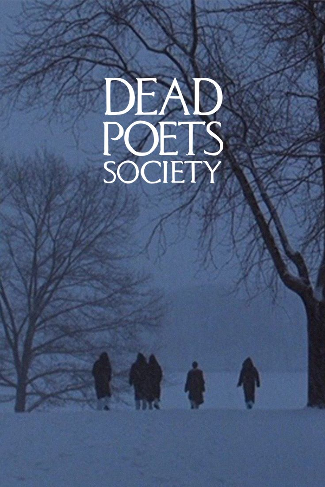
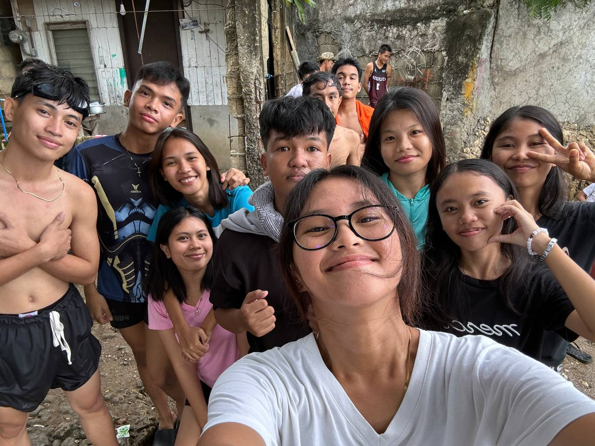

Dead Poet Society

This movie is one of my favorites. I can't really moved on of the plots since the day I watch until now, its so rare to saw a group of men who love to write and read poet, and this movie is not only about poet its also about dream, courage, and finding your own voice.
In this movie there's a teacher who encourage them to think for themselves and to appreciate poetry and after that boys will gather in a cave that near in their school they will read the poetry they made. I really really amazed of this movieeeee, and what i like the most was how the boys supported each other.
This movie is not like a happy movie, its also sad movie I cried a lot when Niel(one of the boys) died, killing himself because his father didn't support of what he want, his father want him to pursue doctor but niel want to be an actor. This is what i mean that I can't moved on on the plots, as in I didn't saw it coming.In that part of movie is like they want to ano sa mga parents na ang ipa pursue sa ilang child na course is ang ilang ganahan, and dili ang want sa ilang anak and worst e-pressure nila ang ilang mga child, that lead into suicide.
I know there's a lot of movie na like life lesson sad but this movie ni stand out gud sa akoa, I really really love this movie.
Siblings not by blood but by heart

Im so grateful this people came into my life.This people are the reason why school feels lighter. They make my senior life so memorable, we laugh, cry, overthinks, share our codes, and pressure our selves together. it feels better because we faced it together.
What I love about my friends is that they understand me. They listen when I rant, cheer me up when I’m down, and celebrate even the smallest wins with me. With them, I don’t feel alone.
I realized that Senior High is not only about academics—it’s also about building memories and friendships that will last even after graduation.
Source: Word on Fire https://share.google/VgbA9eMJmu2XQbqsj